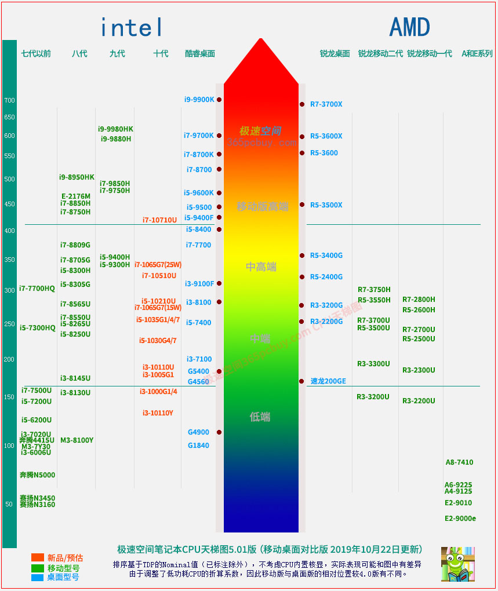

文章标题
发表时间：2019-11-10 文章浏览次数：2165 作者：pc小虫
此文已于2019年10月22日更新，在4.X到5.0升级过程中，出现了较大失误，忘记了调整速龙200GE的位置，在5.01版予以修正。
intel的移动版处理器，从第八代直接跳到了十代，来了一次飞跃。由于涉及型号较多，装机大湿笔记本CPU天梯图长高了，所有的型号全部重新校对了位置，在图中可以清晰地看出酷睿十代笔记本处理器的性能表现。
读图提示
1、装机大湿CPU天梯图并不是单纯采用某个软件的跑分，可以看做是站长给其的一个综合评估，数值不包含核显性能和AVX-512。
3、第十代酷睿笔记本处理器的排行有诸多难点，如i7-1065G7（15W）和i5-10210U，性能相近。站长以i7-8565U为参照物对二者进行了比对。
其分析过程可阅读《笔记本处理器排行榜 （酷睿十代CPU性能排名，i7-1065G7意外落榜前三甲）》
3、评测和推导二者同步进行。
站长阅读了大量测试资料，但很多数据并没有说明测试环境，站长对此持有谨慎态度。俗话说，实践是检验真理的唯一标准。然而，在衡量处理器性能时候，实测和推导是同等重要。即使是同品牌同机型，在不同模式下实测结果也会相差30%甚至更大。我们也无法把所有第十代酷睿笔记本集中到一起来一次PK。推导不仅可用于对测试数据的检验，也用于新型号缺少评测时的预估。二者是相辅相成的关系。
4、不能完全照搬处理器排行榜去选笔记本。
虽然i7-1065G7略输给i5-10210U，但其10nm工艺、更优秀的Sunny Cove微架构，如果在其余配置（显卡内存硬盘）和价格相差不大的情况下应首选新架构型号。

注：此图是笔记本处理器天梯，因此只给出了部分桌面版方便对比，不含R7-3800X以上的高端型号。桌面版CPU天梯图 查看这里>>
装机大湿笔记本CPU天梯图5.0版的解读
1、同一型号处理器性能并不完全相同。
移动处理器和桌面版CPU不同，台式机由于散热不是大问题，同一款处理器在不同的主机中，可以说性能“基本相同”。但对于移动处理器，哪怕核心线程数量、频率相同，但在不同的笔记本上，其性能可以相差30%甚至更多。比如i7-8550U，在功耗25W时的性能比在10W的时候，要高50%。
2、把高端台式机处理器放在笔记本中，性能会下降。
一些笔记本电脑采用了台式机处理器，如i5-9600K，i7-9700K等，由于散热比台式机差太多，一般的模具承受不住95W的TDP，而做了功耗限制，限制功耗的最好办法是降低睿频，因此其性能要比台式机差一截。但这点在图上并没有反应出来。
3、此图不完全按照跑分，根据TDP的不同，考虑了睿频持久性因素。
在现实中，有两个学生，甲长期考90分但没有考过100分，乙一般只能考80分，但偶然有时考100，很显然，甲的成绩更优异。
CPU的测试软件通常时间短，几分钟内完成，实际上这是CPU的短时间能达到的性能，时间稍微长就“撞墙”（温度墙和功耗墙），性能立刻大幅度下降，类似上面的例子，根据短时间的跑分去衡量笔记本处理器性能，就容易出现误判。
4、不属于酷睿和锐龙架构的，性能都恼火。
图中有的型号既不属于酷睿，也不属于锐龙，一般用户只看名称难以识别。此类笔记本的特点是”三低“：价格低，性能低，功耗低。需要较好的性能，则要在intel的酷睿（七代之后）和AMD锐龙里面选择，而intel N开头并非酷睿架构，AMD这边的A系列和E系列也非锐龙，都属于难兄难弟，不能对其性能抱有希望。
5、关于锐龙移动版
R5-3500U、R7-3750H等，看名字是3000系列，但并不是锐龙三代，而是二代，锐龙三代是ZEN2架构，不是ZEN+。
第二代锐龙移动版（ZEN+架构）：R5-3500U、R7-3750H等。
第二代锐龙桌面版（ZEN+架构）：R5-2600、R7-2700等。
从上面看出，同样为第二代锐龙，二者的命名上，移动版是3开头，桌面版是2开头。
锐龙移动版无高端型号，R7-3750H不配戴上R7的光环。
在桌面版，锐龙5的对手是i5，锐龙7的对手是i7，而到了移动版上，AMD怂了，R7-3750H的对手并不是intel的i7，而是i5，实际连i5-8300H还不如。二者虽然频率一样，但R7-3750H的TDP只有35W，i5-8300H为45W，R7-3750H为ZEN+架构，核心效率比酷睿八代低5%，这两个因素叠加导致其性能大约只有i5-8300H的92%左右，而且可能更低。R7-3750H的 cTDP为12-35W，如果低于30W可以说不配拥有H后缀，低到12W那就比3700U还恼火。第一代锐龙移动版R5-2600H的cTDP都可以达到35~54W，目前尚不清楚AMD为什么在第二代移动版的TDP开了倒车，可能是主攻轻薄游戏本方向吧。
关于锐龙游戏本
华硕飞行堡垒7 R7-3750H+GTX1660Ti这款笔记本，从配置价格看都是有竞争力的，但目前其核显强制占用2G内存，8G内存只能用6G，解决办法只能等厂家更新BIOS，要知道作为游戏本，6GB内存肯定是不行的。选此机型暂时只有加根内存条，用6+8=14G内存吧。
"两堵墙”
每一台笔记本都有”两堵墙“，分别是”温度墙“和”功耗墙“。简单的说，就是当处理器温度达到某个临界值，或者达到某个功耗值的时候，系统会强制让其降频。这好一辆智能汽车，在发动机温度过高就自动降低速度，而发动机的转速过高也会自动降低速度，其目的是为了保护硬件不至于烧毁。
温度墙：intel的处理器，移动版和桌面版本的指导数值都为约100度，实际上厂商不会设置这么高，因为高温就意味着会大幅度增加出故障的概率，这么一来，不仅会带来极差的品牌口碑，也极大地增加了售后成本，但是如果设置得过于保守，性能又会打折扣。
功耗墙：不同的移动处理器不一样，如i5-8250U，其TDP的范围是10-15-25W，厂商可以自行指定一个功耗数值，超过这个值就强制降频。
对同一款处理器，温度墙和功耗墙数值可以不同，其高低主要受两个因素影响：该型号的散热水平和工厂的理念（激进/保守）。
热点问答：
问：笔记本品牌哪个好？
答：查看解答>>
问：笔记本电脑哪款好？
答：笔记本电脑没有绝对哪款好，通常的方法是根据自己需求和预算，选择适合的品牌和配置。这说来有点抽象。在预算有限的情况下，是就需要在品牌、性能、或者便携性之间做出一个选择，如果对性能要求较高，那么应优选高配置的二线、新锐品牌。
问：能否推荐一些性价比高的笔记本？
答：首选主流配置。同一品牌，同一款处理器的机型中，有的机型产量大，单机成本就会下降，而有的冷门配置，由于产量少，单台的成本自然高。因此，考虑性价比优先考虑主流配置，可以参考装机大湿的 小虫榜单>>，其中笔记本排行榜中的机型是性价比相对较好的。
问：笔记本处理器末尾的字母M、U、Q 、H等是什么含义呢？
答：
M：mobil，可移动的，代表双核移动版本
Q：quaternary，四个，代表四核
U：under，较低的，代表低电压、低功耗处理器
Y：代表超低电压、超低功耗处理器
H：high，高的，代表较高的功耗、较高性能的处理器。
（注：有文解释H是采用BGA封装的双核，但容易让人误解：没有H就不是BGA封装，实际上笔记本处理器如7500U、8250U、M3-7Y30等，都采用的BGA封装，这里采用high的解释更好）
K：king，王者，代表不锁倍频的频率王者。
以上可以组合为：
QM：四核移动版、HQ：高性能四核、HK：高性能王者。
问：笔记本显卡和台式机显卡相同型号性能一样吗？
答：以前的笔记本独显受技术和工艺限制，相同代号后面总要在后面加个m，比如台式机叫GTX960，那么对应的笔记本型号为GTX960m，多了个m，流处理器从1024个下降到了640个，性能降低40%，变得完全不在一个档次上。从10代N卡（帕斯卡架构）开始，由于能耗比大幅度提升，笔记本显卡型号就取消这个m了。比如GTX1050Ti，桌面版和移动版名称都一样是GTX1050Ti，二者之间一些细节不同，一般是移动版的频率稍低，性能虽然低一些但还不至于低40%这么夸张。但有部分型号的命名上和台式机的有点不同，比如MX150，实际对应的是GT1030。
最近NV又推出了Max-Q系列独显，Max-Q是工程学名词代表宇宙飞船在大气飞行时所承受的最大动态压力。Max-Q通过降低频率和TDP，来实现较高的性能和更低的功耗，但付出的代价是损失一部分性能，如Max-Q GTX1060，性能相当于GTX1060（移动版）的85%，相当于桌面版的79%，但好处是功耗下来了，而且性能高于GTX1050Ti。
问： intel i5-8250U和R5-3500U怎么选？
答：R5-3500U核心显卡性能上的有优势，但i5-8250U有性能更强的独显版本
CPU性能上二者基本打平，R5-3500U目前只有核显版本，会占用内存作为显存，如果标配8GB被占用2G作为显存，那么只有6GB可用，而8250U则有核显和独显两种版本，独显版本常见的组合是搭配MX150，如果是满血版的MX150，则其性能大幅度高于R5-3500U的核显。
选购笔记本选购注意
一般来说，在京东、天猫等官方旗舰店网上购买笔记本电脑，价格虽然不会有很大优惠（秒杀、特价活动除外），但至少不会被坑，不会遇到说赛扬四核比i5双核好的情况。实体店则有两个可能性，要么相同配置的机型，比官网便宜一点，要么就遇到JS被坑。参考：JS常用6大绝招揭秘>> 的第三条：故意亏本法。要避免这类陷阱的最好方法就是多学点电脑硬件知识，认清楚配置（CPU、内存、硬盘、显卡、屏幕等）型号。